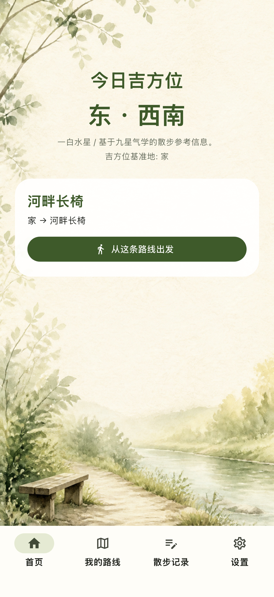
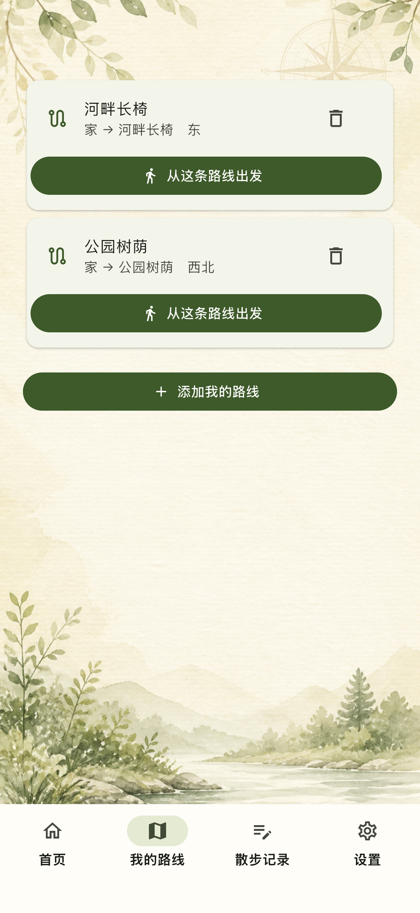
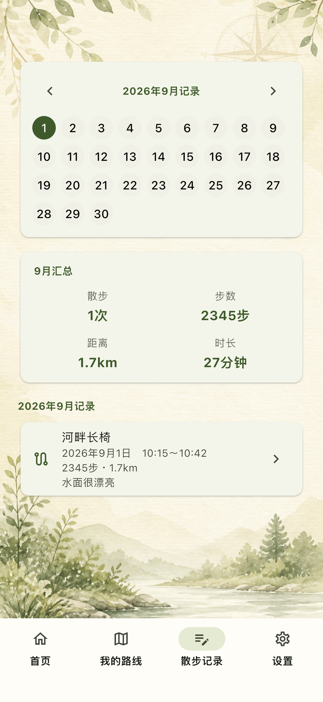
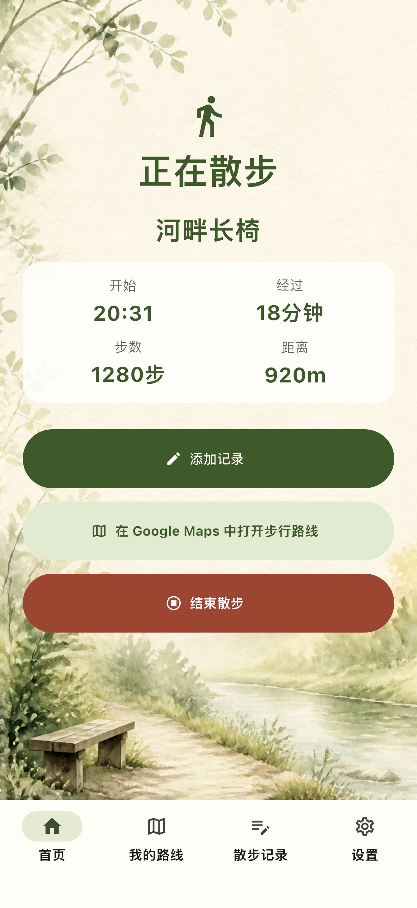

参考今日
吉方位
吉路根据九星气学显示今日方位。在决定去哪里时，给你一个温和的参考。

01 / ABOUT
吉路是一款免费使用的散步应用，以今日吉方位为参考，从已保存的“我的路线”中选择路线，打开步行路线，并记录每次散步。
不知道去哪里，或想让散步成为习惯的时候。无需花时间规划，从熟悉的路中选一条“今天走这里”，就能出发。
了解功能02 / FEATURES
无论是参考今日吉方位，还是选择熟悉的路线，吉路都把开始散步所需的步骤整理成一条安静的流程。

吉路根据九星气学显示今日方位。在决定去哪里时，给你一个温和的参考。

保存出发地、目的地、途经点和心情标签。想在附近散步时，随时调出喜欢的路线。

在外部地图应用或浏览器中打开所选路线的步行路线。优先使用 Google Maps。

记录步数、距离、时间、心情和备注。通过日历或列表回顾过去的散步。
03 / HOW IT WORKS
设置一次，保存熟悉的路线，然后为今天选一条要走的路。


在设备上设置用于显示今日方位的信息。

给喜欢的散步路线命名，并保存到“我的路线”。

打开步行路线，散步后留下记录。
04 / 应用界面
不过度堆叠信息，让今天要做的事一目了然。沿着散步流程，看看吉路的五个画面。
在首页同时查看今日吉方位和已保存的“我的路线”。有合适的推荐路线时可以直接选择，也可以不在意方位，自己决定出发的路。

去附近的公园，去河边的长椅。给路线命名并保存，下次想散步时就能再次使用。在寻找新路线之前，先从自己的“我的路线”开始。


05 / 安心与隐私
吉路只是为开始散步提供一个契机。它不会把方位或测量数据当作任何保证。
吉路显示基于九星气学的方位，但不保证带来好运或健康效果。
吉路不是一直追踪位置的应用。使用当前位置时，请遵循 iPhone 的权限设置。
无需登录或云端同步，已保存的路线和散步记录会在设备上处理。
请确认交通、天气、道路安全和自身状态，在安全范围内使用吉路。
06 / 常见问题
关于吉方位、位置信息和已保存路线。开始使用前，先了解这些内容。
吉路会根据九星气学显示方位，作为思考散步去向时的参考信息。它不保证带来好运或健康效果。
可以。你可以不参考吉方位，直接从已保存的“我的路线”中选择任意散步路线出发。
不会。吉路不是一直通过 GPS 追踪位置的应用。使用当前位置时，请遵循 iPhone 的权限设置和应用内说明。
不会。吉路不会自动生成沿道路的环形路线。你可以从提前保存的“我的路线”中选择今天要走的路线。
初期版本面向 iPhone 设计。在 iPad 上，计划直接使用 iPhone 版本。